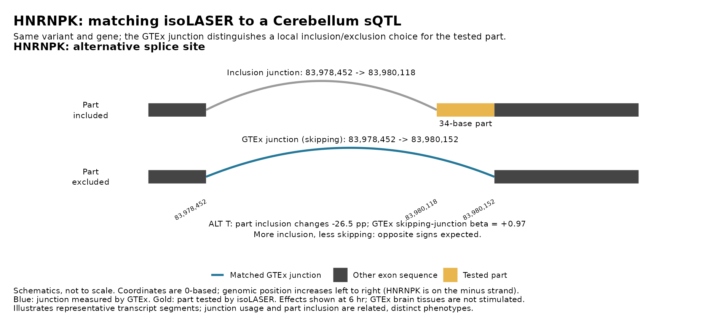
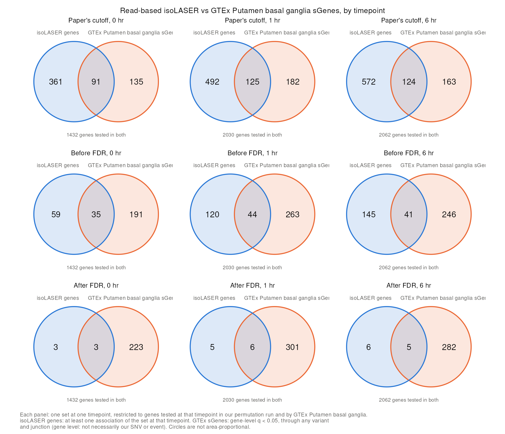

Last updated: 2026-10-27
Checks: 6 1
Knit directory: long_read_rna/
This reproducible R Markdown analysis was created with workflowr (version 1.7.0). The Checks tab describes the reproducibility checks that were applied when the results were created. The Past versions tab lists the development history.
The R Markdown file has unstaged changes. To know which version of
the R Markdown file created these results, you’ll want to first commit
it to the Git repo. If you’re still working on the analysis, you can
ignore this warning. When you’re finished, you can run
wflow_publish to commit the R Markdown file and build the
HTML.
Great job! The global environment was empty. Objects defined in the global environment can affect the analysis in your R Markdown file in unknown ways. For reproduciblity it’s best to always run the code in an empty environment.
The command set.seed(20260908) was run prior to running
the code in the R Markdown file. Setting a seed ensures that any results
that rely on randomness, e.g. subsampling or permutations, are
reproducible.
Great job! Recording the operating system, R version, and package versions is critical for reproducibility.
Nice! There were no cached chunks for this analysis, so you can be confident that you successfully produced the results during this run.
Great job! Using relative paths to the files within your workflowr project makes it easier to run your code on other machines.
Great! You are using Git for version control. Tracking code development and connecting the code version to the results is critical for reproducibility.
The results in this page were generated with repository version a7f8095. See the Past versions tab to see a history of the changes made to the R Markdown and HTML files.
Note that you need to be careful to ensure that all relevant files for
the analysis have been committed to Git prior to generating the results
(you can use wflow_publish or
wflow_git_commit). workflowr only checks the R Markdown
file, but you know if there are other scripts or data files that it
depends on. Below is the status of the Git repository when the results
were generated:
Unstaged changes:
Modified: analysis/isolaser_gtex_comparison_panel10nc.Rmd
Modified: analysis/isolaser_gtex_comparison_reads10nc.Rmd
Note that any generated files, e.g. HTML, png, CSS, etc., are not included in this status report because it is ok for generated content to have uncommitted changes.
These are the previous versions of the repository in which changes were
made to the R Markdown
(analysis/isolaser_gtex_comparison_reads10nc.Rmd) and HTML
(docs/isolaser_gtex_comparison_reads10nc.html) files. If
you’ve configured a remote Git repository (see
?wflow_git_remote), click on the hyperlinks in the table
below to view the files as they were in that past version.
| File | Version | Author | Date | Message |
|---|---|---|---|---|
| Rmd | a7f8095 | XSun | 2026-10-27 | update |
| html | a7f8095 | XSun | 2026-10-27 | update |
| Rmd | 49d710d | XSun | 2026-10-27 | update |
| html | 49d710d | XSun | 2026-10-27 | update |
| Rmd | 1bd9433 | XSun | 2026-10-27 | update |
| html | 1bd9433 | XSun | 2026-10-27 | update |
| Rmd | cb2c03b | XSun | 2026-10-26 | update |
| html | cb2c03b | XSun | 2026-10-26 | update |
| Rmd | 2f66324 | XSun | 2026-10-23 | update |
| html | 2f66324 | XSun | 2026-10-23 | update |
This page compares read-based isoLASER without the clustering filter (FDR page) with GTEx v8 sQTLs in the nine brain tissues that have full summary statistics. As in the right panel of Fig. 3e of the isoLASER paper, we compare our allelic splicing effects (isoLASER ΔPSI) with GTEx sQTL effects (beta), using each event’s skipping junction. Its usage falls when the exonic part is included, so a negative correlation is expected.
Our associations come in three sets:
cis
label and pooled ΔPSI, as in the paper, from the read-based run’s joint
output. It does not depend on our filters.cis, |ΔPSI| ≥ 0.05 and part ≥ 10 bp. There is no clustering
filter.For this GTEx comparison, we use a broader effect-size screen of
|ΔPSI| ≥ 0.05; the main FDR
page uses ≥ 0.10. The BH q-values were calculated over the full
eligible family of tested associations in each timepoint, before the
cis and |ΔPSI| display filters are applied, so the broader
screen changes no q-value. It only shows more of the associations that
already have q < 0.05.
Example, HNRNPK. The C>T variant (chr9:83980154, 0-based) and the 34-base exonic part (gold) form an alternative splice site. GTEx measures the skipping junction (blue), which jumps over the part. At 6 hours, ALT changes part inclusion by -26.5 percentage points in this run. GTEx Cerebellum’s beta for the skipping junction is +0.97: opposite signs, as expected.

One tab per tissue. Rows are the three sets and columns the timepoints; each panel title gives the pairs, genes, Pearson R and p. Blue: GTEx nominal p < 0.05; grey: p ≥ 0.05. The line is a least-squares fit, drawn when a panel has 3 or more pairs.
Two tests, both on the skipping-junction pairs, for each set and tissue:
The binomial p-values are exploratory. The test assumes independent pairs, and they are not:
For example, after FDR the pairs with GTEx p < 0.05 are 5 pairs at 4 exonic parts in 4 genes (ATP5MJ, HNRNPK, PPA2, SNHG5), over all nine tissues. Their agreement is useful descriptive evidence, but the binomial p treats them as 5 independent trials. A formal test would have to account for dependence within genes and loci, and for multiple comparisons.
In each tab:
Only a minority of the paper’s-cutoff associations are tested in GTEx for the same variant and gene: 21.5–39.2% across tissues and timepoints (Cerebellum at 0 hr: 1,369 of 6,154, 22.2%, with 155 plotted pairs). Fewer still form an annotated event with a matching skipping junction.
Pairs matched
| Set | Timepoint | Our associations (SNVs) | Same variant and gene tested in GTEx | Plotted pairs | Genes |
|---|---|---|---|---|---|
| Paper’s cutoff | 0 hr | 6154 | 1369 | 155 | 106 |
| Paper’s cutoff | 1 hr | 5804 | 2053 | 227 | 154 |
| Paper’s cutoff | 6 hr | 6242 | 2433 | 256 | 169 |
| Before FDR | 0 hr | 194 | 170 | 26 | 18 |
| Before FDR | 1 hr | 359 | 331 | 57 | 40 |
| Before FDR | 6 hr | 403 | 362 | 40 | 30 |
| After FDR | 0 hr | 12 | 11 | 3 | 2 |
| After FDR | 1 hr | 25 | 24 | 4 | 3 |
| After FDR | 6 hr | 34 | 23 | 5 | 4 |
Correlation
| Set | Timepoint | Pairs | All: R (p) | All: expected sign | GTEx p < 1e-5: expected sign |
|---|---|---|---|---|---|
| Paper’s cutoff | 0 hr | 155 | -0.32 (5.9e-05) | 88/155 | 24/27 |
| Paper’s cutoff | 1 hr | 227 | -0.30 (3.4e-06) | 129/227 | 33/42 |
| Paper’s cutoff | 6 hr | 256 | -0.30 (8.8e-07) | 158/256 | 36/42 |
| Before FDR | 0 hr | 26 | -0.42 (0.034) | 20/26 | 8/8 |
| Before FDR | 1 hr | 57 | -0.21 (0.11) | 35/57 | 14/17 |
| Before FDR | 6 hr | 40 | -0.32 (0.043) | 27/40 | 12/12 |
| After FDR | 0 hr | 3 | -0.97 (0.17) | 3/3 | 3/3 |
| After FDR | 1 hr | 4 | -0.83 (0.17) | 4/4 | 4/4 |
| After FDR | 6 hr | 5 | -0.83 (0.079) | 5/5 | 4/4 |
Sign consistency (pairs with GTEx p < 0.05; the binomial p-values are exploratory)
| Set | Timepoint | Pairs | Consistent | Consistent (%) | Binomial p, two-sided | Binomial p, one-sided |
|---|---|---|---|---|---|---|
| Paper’s cutoff | 0 hr | 60 | 48 | 80 | 3.2e-06 | 1.6e-06 |
| Paper’s cutoff | 1 hr | 88 | 63 | 72 | 6.3e-05 | 3.1e-05 |
| Paper’s cutoff | 6 hr | 80 | 60 | 75 | 8.6e-06 | 4.3e-06 |
| Paper’s cutoff | All timepoints, each pair once | 156 | 109 | 70 | 7.5e-07 | 3.8e-07 |
| Before FDR | 0 hr | 13 | 12 | 92 | 0.0034 | 0.0017 |
| Before FDR | 1 hr | 27 | 17 | 63 | 0.25 | 0.12 |
| Before FDR | 6 hr | 16 | 14 | 88 | 0.0042 | 0.0021 |
| Before FDR | All timepoints, each pair once | 44 | 31 | 70 | 0.0096 | 0.0048 |
| After FDR | 0 hr | 3 | 3 | 100 | 0.25 | 0.12 |
| After FDR | 1 hr | 4 | 4 | 100 | 0.12 | 0.062 |
| After FDR | 6 hr | 4 | 4 | 100 | 0.12 | 0.062 |
| After FDR | All timepoints, each pair once | 5 | 5 | 100 | 0.062 | 0.031 |
Pairs matched
| Set | Timepoint | Our associations (SNVs) | Same variant and gene tested in GTEx | Plotted pairs | Genes |
|---|---|---|---|---|---|
| Paper’s cutoff | 0 hr | 6154 | 1375 | 161 | 110 |
| Paper’s cutoff | 1 hr | 5804 | 2073 | 235 | 157 |
| Paper’s cutoff | 6 hr | 6242 | 2449 | 261 | 173 |
| Before FDR | 0 hr | 194 | 173 | 28 | 20 |
| Before FDR | 1 hr | 359 | 331 | 57 | 40 |
| Before FDR | 6 hr | 403 | 364 | 42 | 31 |
| After FDR | 0 hr | 12 | 11 | 3 | 2 |
| After FDR | 1 hr | 25 | 24 | 4 | 3 |
| After FDR | 6 hr | 34 | 23 | 5 | 4 |
Correlation
| Set | Timepoint | Pairs | All: R (p) | All: expected sign | GTEx p < 1e-5: expected sign |
|---|---|---|---|---|---|
| Paper’s cutoff | 0 hr | 161 | -0.40 (1.2e-07) | 103/161 | 19/21 |
| Paper’s cutoff | 1 hr | 235 | -0.34 (1e-07) | 139/235 | 28/32 |
| Paper’s cutoff | 6 hr | 261 | -0.35 (7.3e-09) | 152/261 | 32/34 |
| Before FDR | 0 hr | 28 | -0.45 (0.017) | 23/28 | 7/7 |
| Before FDR | 1 hr | 57 | -0.22 (0.11) | 31/57 | 13/14 |
| Before FDR | 6 hr | 42 | -0.32 (0.041) | 25/42 | 13/13 |
| After FDR | 0 hr | 3 | -0.97 (0.17) | 3/3 | 3/3 |
| After FDR | 1 hr | 4 | -0.83 (0.17) | 4/4 | 4/4 |
| After FDR | 6 hr | 5 | -0.84 (0.073) | 4/5 | 4/4 |
Sign consistency (pairs with GTEx p < 0.05; the binomial p-values are exploratory)
| Set | Timepoint | Pairs | Consistent | Consistent (%) | Binomial p, two-sided | Binomial p, one-sided |
|---|---|---|---|---|---|---|
| Paper’s cutoff | 0 hr | 53 | 46 | 87 | 4e-08 | 2e-08 |
| Paper’s cutoff | 1 hr | 68 | 49 | 72 | 0.00036 | 0.00018 |
| Paper’s cutoff | 6 hr | 80 | 66 | 82 | 3.1e-09 | 1.6e-09 |
| Paper’s cutoff | All timepoints, each pair once | 131 | 98 | 75 | 1.1e-08 | 5.6e-09 |
| Before FDR | 0 hr | 13 | 12 | 92 | 0.0034 | 0.0017 |
| Before FDR | 1 hr | 21 | 16 | 76 | 0.027 | 0.013 |
| Before FDR | 6 hr | 19 | 16 | 84 | 0.0044 | 0.0022 |
| Before FDR | All timepoints, each pair once | 40 | 31 | 78 | 0.00068 | 0.00034 |
| After FDR | 0 hr | 3 | 3 | 100 | 0.25 | 0.12 |
| After FDR | 1 hr | 4 | 4 | 100 | 0.12 | 0.062 |
| After FDR | 6 hr | 4 | 4 | 100 | 0.12 | 0.062 |
| After FDR | All timepoints, each pair once | 5 | 5 | 100 | 0.062 | 0.031 |
Pairs matched
| Set | Timepoint | Our associations (SNVs) | Same variant and gene tested in GTEx | Plotted pairs | Genes |
|---|---|---|---|---|---|
| Paper’s cutoff | 0 hr | 6154 | 1400 | 155 | 106 |
| Paper’s cutoff | 1 hr | 5804 | 2081 | 226 | 147 |
| Paper’s cutoff | 6 hr | 6242 | 2441 | 232 | 149 |
| Before FDR | 0 hr | 194 | 168 | 24 | 18 |
| Before FDR | 1 hr | 359 | 336 | 59 | 41 |
| Before FDR | 6 hr | 403 | 369 | 36 | 26 |
| After FDR | 0 hr | 12 | 11 | 3 | 2 |
| After FDR | 1 hr | 25 | 24 | 4 | 3 |
| After FDR | 6 hr | 34 | 29 | 5 | 4 |
Correlation
| Set | Timepoint | Pairs | All: R (p) | All: expected sign | GTEx p < 1e-5: expected sign |
|---|---|---|---|---|---|
| Paper’s cutoff | 0 hr | 155 | -0.31 (9.8e-05) | 99/155 | 19/22 |
| Paper’s cutoff | 1 hr | 226 | -0.29 (1.3e-05) | 123/226 | 32/38 |
| Paper’s cutoff | 6 hr | 232 | -0.32 (4.4e-07) | 136/232 | 32/36 |
| Before FDR | 0 hr | 24 | -0.49 (0.016) | 21/24 | 4/4 |
| Before FDR | 1 hr | 59 | -0.34 (0.0076) | 31/59 | 14/14 |
| Before FDR | 6 hr | 36 | -0.32 (0.056) | 23/36 | 10/10 |
| After FDR | 0 hr | 3 | -0.97 (0.16) | 3/3 | 2/2 |
| After FDR | 1 hr | 4 | -0.86 (0.14) | 4/4 | 3/3 |
| After FDR | 6 hr | 5 | -0.94 (0.017) | 5/5 | 3/3 |
Sign consistency (pairs with GTEx p < 0.05; the binomial p-values are exploratory)
| Set | Timepoint | Pairs | Consistent | Consistent (%) | Binomial p, two-sided | Binomial p, one-sided |
|---|---|---|---|---|---|---|
| Paper’s cutoff | 0 hr | 56 | 44 | 79 | 2.1e-05 | 1e-05 |
| Paper’s cutoff | 1 hr | 69 | 52 | 75 | 2.9e-05 | 1.5e-05 |
| Paper’s cutoff | 6 hr | 76 | 64 | 84 | 1e-09 | 5e-10 |
| Paper’s cutoff | All timepoints, each pair once | 133 | 102 | 77 | 4.9e-10 | 2.5e-10 |
| Before FDR | 0 hr | 11 | 11 | 100 | 0.00098 | 0.00049 |
| Before FDR | 1 hr | 23 | 19 | 83 | 0.0026 | 0.0013 |
| Before FDR | 6 hr | 14 | 13 | 93 | 0.0018 | 0.00092 |
| Before FDR | All timepoints, each pair once | 36 | 31 | 86 | 1.3e-05 | 6.5e-06 |
| After FDR | 0 hr | 3 | 3 | 100 | 0.25 | 0.12 |
| After FDR | 1 hr | 4 | 4 | 100 | 0.12 | 0.062 |
| After FDR | 6 hr | 4 | 4 | 100 | 0.12 | 0.062 |
| After FDR | All timepoints, each pair once | 5 | 5 | 100 | 0.062 | 0.031 |
Pairs matched
| Set | Timepoint | Our associations (SNVs) | Same variant and gene tested in GTEx | Plotted pairs | Genes |
|---|---|---|---|---|---|
| Paper’s cutoff | 0 hr | 6154 | 1325 | 156 | 105 |
| Paper’s cutoff | 1 hr | 5804 | 1988 | 223 | 144 |
| Paper’s cutoff | 6 hr | 6242 | 2372 | 236 | 146 |
| Before FDR | 0 hr | 194 | 177 | 28 | 20 |
| Before FDR | 1 hr | 359 | 338 | 57 | 39 |
| Before FDR | 6 hr | 403 | 367 | 38 | 27 |
| After FDR | 0 hr | 12 | 11 | 4 | 3 |
| After FDR | 1 hr | 25 | 24 | 4 | 3 |
| After FDR | 6 hr | 34 | 29 | 5 | 4 |
Correlation
| Set | Timepoint | Pairs | All: R (p) | All: expected sign | GTEx p < 1e-5: expected sign |
|---|---|---|---|---|---|
| Paper’s cutoff | 0 hr | 156 | -0.32 (6e-05) | 97/156 | 19/21 |
| Paper’s cutoff | 1 hr | 223 | -0.31 (2.1e-06) | 129/223 | 33/39 |
| Paper’s cutoff | 6 hr | 236 | -0.30 (3.4e-06) | 141/236 | 34/38 |
| Before FDR | 0 hr | 28 | -0.45 (0.015) | 23/28 | 6/6 |
| Before FDR | 1 hr | 57 | -0.38 (0.0037) | 35/57 | 12/12 |
| Before FDR | 6 hr | 38 | -0.37 (0.024) | 26/38 | 13/13 |
| After FDR | 0 hr | 4 | -0.53 (0.47) | 4/4 | 3/3 |
| After FDR | 1 hr | 4 | -0.80 (0.2) | 4/4 | 4/4 |
| After FDR | 6 hr | 5 | -0.90 (0.036) | 5/5 | 4/4 |
Sign consistency (pairs with GTEx p < 0.05; the binomial p-values are exploratory)
| Set | Timepoint | Pairs | Consistent | Consistent (%) | Binomial p, two-sided | Binomial p, one-sided |
|---|---|---|---|---|---|---|
| Paper’s cutoff | 0 hr | 57 | 44 | 77 | 4.7e-05 | 2.4e-05 |
| Paper’s cutoff | 1 hr | 64 | 51 | 80 | 1.9e-06 | 9.4e-07 |
| Paper’s cutoff | 6 hr | 80 | 62 | 78 | 8.1e-07 | 4.1e-07 |
| Paper’s cutoff | All timepoints, each pair once | 131 | 97 | 74 | 3.3e-08 | 1.7e-08 |
| Before FDR | 0 hr | 15 | 15 | 100 | 6.1e-05 | 3.1e-05 |
| Before FDR | 1 hr | 24 | 20 | 83 | 0.0015 | 0.00077 |
| Before FDR | 6 hr | 17 | 15 | 88 | 0.0023 | 0.0012 |
| Before FDR | All timepoints, each pair once | 42 | 37 | 88 | 4.4e-07 | 2.2e-07 |
| After FDR | 0 hr | 3 | 3 | 100 | 0.25 | 0.12 |
| After FDR | 1 hr | 4 | 4 | 100 | 0.12 | 0.062 |
| After FDR | 6 hr | 4 | 4 | 100 | 0.12 | 0.062 |
| After FDR | All timepoints, each pair once | 5 | 5 | 100 | 0.062 | 0.031 |
Pairs matched
| Set | Timepoint | Our associations (SNVs) | Same variant and gene tested in GTEx | Plotted pairs | Genes |
|---|---|---|---|---|---|
| Paper’s cutoff | 0 hr | 6154 | 1348 | 151 | 103 |
| Paper’s cutoff | 1 hr | 5804 | 2017 | 225 | 145 |
| Paper’s cutoff | 6 hr | 6242 | 2417 | 237 | 149 |
| Before FDR | 0 hr | 194 | 178 | 27 | 19 |
| Before FDR | 1 hr | 359 | 335 | 58 | 40 |
| Before FDR | 6 hr | 403 | 365 | 40 | 29 |
| After FDR | 0 hr | 12 | 11 | 3 | 2 |
| After FDR | 1 hr | 25 | 24 | 4 | 3 |
| After FDR | 6 hr | 34 | 29 | 5 | 4 |
Correlation
| Set | Timepoint | Pairs | All: R (p) | All: expected sign | GTEx p < 1e-5: expected sign |
|---|---|---|---|---|---|
| Paper’s cutoff | 0 hr | 151 | -0.31 (0.00012) | 95/151 | 17/20 |
| Paper’s cutoff | 1 hr | 225 | -0.24 (0.00028) | 127/225 | 29/36 |
| Paper’s cutoff | 6 hr | 237 | -0.27 (2.3e-05) | 143/237 | 30/32 |
| Before FDR | 0 hr | 27 | -0.37 (0.055) | 18/27 | 7/7 |
| Before FDR | 1 hr | 58 | -0.32 (0.014) | 35/58 | 12/13 |
| Before FDR | 6 hr | 40 | -0.37 (0.018) | 28/40 | 13/13 |
| After FDR | 0 hr | 3 | -0.96 (0.18) | 3/3 | 3/3 |
| After FDR | 1 hr | 4 | -0.87 (0.13) | 4/4 | 4/4 |
| After FDR | 6 hr | 5 | -0.94 (0.019) | 5/5 | 4/4 |
Sign consistency (pairs with GTEx p < 0.05; the binomial p-values are exploratory)
| Set | Timepoint | Pairs | Consistent | Consistent (%) | Binomial p, two-sided | Binomial p, one-sided |
|---|---|---|---|---|---|---|
| Paper’s cutoff | 0 hr | 52 | 44 | 85 | 4e-07 | 2e-07 |
| Paper’s cutoff | 1 hr | 72 | 51 | 71 | 0.00053 | 0.00027 |
| Paper’s cutoff | 6 hr | 68 | 56 | 82 | 6.2e-08 | 3.1e-08 |
| Paper’s cutoff | All timepoints, each pair once | 134 | 98 | 73 | 8.1e-08 | 4.1e-08 |
| Before FDR | 0 hr | 11 | 11 | 100 | 0.00098 | 0.00049 |
| Before FDR | 1 hr | 24 | 18 | 75 | 0.023 | 0.011 |
| Before FDR | 6 hr | 17 | 15 | 88 | 0.0023 | 0.0012 |
| Before FDR | All timepoints, each pair once | 39 | 31 | 79 | 0.00029 | 0.00015 |
| After FDR | 0 hr | 3 | 3 | 100 | 0.25 | 0.12 |
| After FDR | 1 hr | 4 | 4 | 100 | 0.12 | 0.062 |
| After FDR | 6 hr | 4 | 4 | 100 | 0.12 | 0.062 |
| After FDR | All timepoints, each pair once | 5 | 5 | 100 | 0.062 | 0.031 |
Pairs matched
| Set | Timepoint | Our associations (SNVs) | Same variant and gene tested in GTEx | Plotted pairs | Genes |
|---|---|---|---|---|---|
| Paper’s cutoff | 0 hr | 6154 | 1358 | 158 | 108 |
| Paper’s cutoff | 1 hr | 5804 | 2079 | 226 | 147 |
| Paper’s cutoff | 6 hr | 6242 | 2423 | 241 | 146 |
| Before FDR | 0 hr | 194 | 174 | 27 | 19 |
| Before FDR | 1 hr | 359 | 334 | 58 | 40 |
| Before FDR | 6 hr | 403 | 368 | 39 | 28 |
| After FDR | 0 hr | 12 | 11 | 3 | 2 |
| After FDR | 1 hr | 25 | 24 | 4 | 3 |
| After FDR | 6 hr | 34 | 29 | 5 | 4 |
Correlation
| Set | Timepoint | Pairs | All: R (p) | All: expected sign | GTEx p < 1e-5: expected sign |
|---|---|---|---|---|---|
| Paper’s cutoff | 0 hr | 158 | -0.32 (4.3e-05) | 87/158 | 16/18 |
| Paper’s cutoff | 1 hr | 226 | -0.33 (3.5e-07) | 135/226 | 24/29 |
| Paper’s cutoff | 6 hr | 241 | -0.42 (1.7e-11) | 146/241 | 31/33 |
| Before FDR | 0 hr | 27 | -0.46 (0.015) | 22/27 | 3/3 |
| Before FDR | 1 hr | 58 | -0.31 (0.017) | 37/58 | 10/11 |
| Before FDR | 6 hr | 39 | -0.43 (0.0065) | 27/39 | 9/9 |
| After FDR | 0 hr | 3 | -0.97 (0.17) | 3/3 | none |
| After FDR | 1 hr | 4 | -0.86 (0.14) | 4/4 | 1/1 |
| After FDR | 6 hr | 5 | -0.96 (0.0084) | 5/5 | 1/1 |
Sign consistency (pairs with GTEx p < 0.05; the binomial p-values are exploratory)
| Set | Timepoint | Pairs | Consistent | Consistent (%) | Binomial p, two-sided | Binomial p, one-sided |
|---|---|---|---|---|---|---|
| Paper’s cutoff | 0 hr | 46 | 39 | 85 | 1.8e-06 | 9.2e-07 |
| Paper’s cutoff | 1 hr | 66 | 51 | 77 | 1e-05 | 5e-06 |
| Paper’s cutoff | 6 hr | 70 | 63 | 90 | 2.3e-12 | 1.1e-12 |
| Paper’s cutoff | All timepoints, each pair once | 120 | 97 | 81 | 5.3e-12 | 2.6e-12 |
| Before FDR | 0 hr | 12 | 10 | 83 | 0.039 | 0.019 |
| Before FDR | 1 hr | 23 | 17 | 74 | 0.035 | 0.017 |
| Before FDR | 6 hr | 18 | 18 | 100 | 7.6e-06 | 3.8e-06 |
| Before FDR | All timepoints, each pair once | 40 | 32 | 80 | 0.00018 | 9.1e-05 |
| After FDR | 0 hr | 3 | 3 | 100 | 0.25 | 0.12 |
| After FDR | 1 hr | 4 | 4 | 100 | 0.12 | 0.062 |
| After FDR | 6 hr | 4 | 4 | 100 | 0.12 | 0.062 |
| After FDR | All timepoints, each pair once | 5 | 5 | 100 | 0.062 | 0.031 |
Pairs matched
| Set | Timepoint | Our associations (SNVs) | Same variant and gene tested in GTEx | Plotted pairs | Genes |
|---|---|---|---|---|---|
| Paper’s cutoff | 0 hr | 6154 | 1372 | 159 | 110 |
| Paper’s cutoff | 1 hr | 5804 | 2030 | 224 | 148 |
| Paper’s cutoff | 6 hr | 6242 | 2429 | 239 | 154 |
| Before FDR | 0 hr | 194 | 179 | 26 | 19 |
| Before FDR | 1 hr | 359 | 335 | 59 | 41 |
| Before FDR | 6 hr | 403 | 368 | 38 | 28 |
| After FDR | 0 hr | 12 | 11 | 4 | 3 |
| After FDR | 1 hr | 25 | 24 | 4 | 3 |
| After FDR | 6 hr | 34 | 29 | 5 | 4 |
Correlation
| Set | Timepoint | Pairs | All: R (p) | All: expected sign | GTEx p < 1e-5: expected sign |
|---|---|---|---|---|---|
| Paper’s cutoff | 0 hr | 159 | -0.37 (2.2e-06) | 94/159 | 18/20 |
| Paper’s cutoff | 1 hr | 224 | -0.34 (1.5e-07) | 129/224 | 28/33 |
| Paper’s cutoff | 6 hr | 239 | -0.34 (6.9e-08) | 147/239 | 29/31 |
| Before FDR | 0 hr | 26 | -0.52 (0.0066) | 20/26 | 4/4 |
| Before FDR | 1 hr | 59 | -0.27 (0.04) | 31/59 | 12/12 |
| Before FDR | 6 hr | 38 | -0.39 (0.015) | 29/38 | 10/10 |
| After FDR | 0 hr | 4 | -0.76 (0.24) | 4/4 | 2/2 |
| After FDR | 1 hr | 4 | -0.93 (0.069) | 4/4 | 3/3 |
| After FDR | 6 hr | 5 | -0.97 (0.005) | 5/5 | 3/3 |
Sign consistency (pairs with GTEx p < 0.05; the binomial p-values are exploratory)
| Set | Timepoint | Pairs | Consistent | Consistent (%) | Binomial p, two-sided | Binomial p, one-sided |
|---|---|---|---|---|---|---|
| Paper’s cutoff | 0 hr | 50 | 41 | 82 | 5.6e-06 | 2.8e-06 |
| Paper’s cutoff | 1 hr | 65 | 55 | 85 | 1.2e-08 | 5.9e-09 |
| Paper’s cutoff | 6 hr | 78 | 63 | 81 | 3.7e-08 | 1.9e-08 |
| Paper’s cutoff | All timepoints, each pair once | 124 | 99 | 80 | 1.3e-11 | 6.5e-12 |
| Before FDR | 0 hr | 12 | 12 | 100 | 0.00049 | 0.00024 |
| Before FDR | 1 hr | 22 | 17 | 77 | 0.017 | 0.0085 |
| Before FDR | 6 hr | 14 | 13 | 93 | 0.0018 | 0.00092 |
| Before FDR | All timepoints, each pair once | 36 | 30 | 83 | 7e-05 | 3.5e-05 |
| After FDR | 0 hr | 3 | 3 | 100 | 0.25 | 0.12 |
| After FDR | 1 hr | 4 | 4 | 100 | 0.12 | 0.062 |
| After FDR | 6 hr | 4 | 4 | 100 | 0.12 | 0.062 |
| After FDR | All timepoints, each pair once | 5 | 5 | 100 | 0.062 | 0.031 |
Pairs matched
| Set | Timepoint | Our associations (SNVs) | Same variant and gene tested in GTEx | Plotted pairs | Genes |
|---|---|---|---|---|---|
| Paper’s cutoff | 0 hr | 6154 | 1324 | 160 | 108 |
| Paper’s cutoff | 1 hr | 5804 | 2022 | 227 | 149 |
| Paper’s cutoff | 6 hr | 6242 | 2399 | 236 | 149 |
| Before FDR | 0 hr | 194 | 176 | 28 | 20 |
| Before FDR | 1 hr | 359 | 336 | 60 | 42 |
| Before FDR | 6 hr | 403 | 366 | 39 | 28 |
| After FDR | 0 hr | 12 | 11 | 3 | 2 |
| After FDR | 1 hr | 25 | 24 | 4 | 3 |
| After FDR | 6 hr | 34 | 29 | 5 | 4 |
Correlation
| Set | Timepoint | Pairs | All: R (p) | All: expected sign | GTEx p < 1e-5: expected sign |
|---|---|---|---|---|---|
| Paper’s cutoff | 0 hr | 160 | -0.36 (2.1e-06) | 93/160 | 27/29 |
| Paper’s cutoff | 1 hr | 227 | -0.32 (5.6e-07) | 134/227 | 35/40 |
| Paper’s cutoff | 6 hr | 236 | -0.34 (5.5e-08) | 151/236 | 38/42 |
| Before FDR | 0 hr | 28 | -0.48 (0.01) | 20/28 | 8/8 |
| Before FDR | 1 hr | 60 | -0.31 (0.015) | 31/60 | 13/13 |
| Before FDR | 6 hr | 39 | -0.37 (0.021) | 29/39 | 12/12 |
| After FDR | 0 hr | 3 | -0.97 (0.16) | 3/3 | 3/3 |
| After FDR | 1 hr | 4 | -0.83 (0.17) | 4/4 | 4/4 |
| After FDR | 6 hr | 5 | -0.93 (0.02) | 5/5 | 4/4 |
Sign consistency (pairs with GTEx p < 0.05; the binomial p-values are exploratory)
| Set | Timepoint | Pairs | Consistent | Consistent (%) | Binomial p, two-sided | Binomial p, one-sided |
|---|---|---|---|---|---|---|
| Paper’s cutoff | 0 hr | 57 | 46 | 81 | 3.3e-06 | 1.7e-06 |
| Paper’s cutoff | 1 hr | 63 | 51 | 81 | 7.5e-07 | 3.7e-07 |
| Paper’s cutoff | 6 hr | 80 | 62 | 78 | 8.1e-07 | 4.1e-07 |
| Paper’s cutoff | All timepoints, each pair once | 127 | 96 | 76 | 6.3e-09 | 3.2e-09 |
| Before FDR | 0 hr | 11 | 11 | 100 | 0.00098 | 0.00049 |
| Before FDR | 1 hr | 20 | 15 | 75 | 0.041 | 0.021 |
| Before FDR | 6 hr | 21 | 18 | 86 | 0.0015 | 0.00074 |
| Before FDR | All timepoints, each pair once | 38 | 30 | 79 | 0.00047 | 0.00024 |
| After FDR | 0 hr | 3 | 3 | 100 | 0.25 | 0.12 |
| After FDR | 1 hr | 4 | 4 | 100 | 0.12 | 0.062 |
| After FDR | 6 hr | 4 | 4 | 100 | 0.12 | 0.062 |
| After FDR | All timepoints, each pair once | 5 | 5 | 100 | 0.062 | 0.031 |
Pairs matched
| Set | Timepoint | Our associations (SNVs) | Same variant and gene tested in GTEx | Plotted pairs | Genes |
|---|---|---|---|---|---|
| Paper’s cutoff | 0 hr | 6154 | 1323 | 151 | 103 |
| Paper’s cutoff | 1 hr | 5804 | 2035 | 227 | 145 |
| Paper’s cutoff | 6 hr | 6242 | 2362 | 228 | 144 |
| Before FDR | 0 hr | 194 | 172 | 24 | 18 |
| Before FDR | 1 hr | 359 | 333 | 57 | 39 |
| Before FDR | 6 hr | 403 | 361 | 36 | 26 |
| After FDR | 0 hr | 12 | 11 | 3 | 2 |
| After FDR | 1 hr | 25 | 24 | 4 | 3 |
| After FDR | 6 hr | 34 | 29 | 5 | 4 |
Correlation
| Set | Timepoint | Pairs | All: R (p) | All: expected sign | GTEx p < 1e-5: expected sign |
|---|---|---|---|---|---|
| Paper’s cutoff | 0 hr | 151 | -0.27 (0.00066) | 87/151 | 13/16 |
| Paper’s cutoff | 1 hr | 227 | -0.28 (2e-05) | 146/227 | 27/33 |
| Paper’s cutoff | 6 hr | 228 | -0.28 (1.3e-05) | 143/228 | 27/30 |
| Before FDR | 0 hr | 24 | -0.57 (0.0038) | 18/24 | 2/2 |
| Before FDR | 1 hr | 57 | -0.38 (0.0037) | 34/57 | 10/10 |
| Before FDR | 6 hr | 36 | -0.42 (0.011) | 28/36 | 6/6 |
| After FDR | 0 hr | 3 | -0.94 (0.22) | 3/3 | 2/2 |
| After FDR | 1 hr | 4 | -0.93 (0.067) | 4/4 | 3/3 |
| After FDR | 6 hr | 5 | -0.97 (0.0068) | 5/5 | 3/3 |
Sign consistency (pairs with GTEx p < 0.05; the binomial p-values are exploratory)
| Set | Timepoint | Pairs | Consistent | Consistent (%) | Binomial p, two-sided | Binomial p, one-sided |
|---|---|---|---|---|---|---|
| Paper’s cutoff | 0 hr | 38 | 33 | 87 | 4.3e-06 | 2.1e-06 |
| Paper’s cutoff | 1 hr | 70 | 54 | 77 | 5.9e-06 | 2.9e-06 |
| Paper’s cutoff | 6 hr | 63 | 52 | 83 | 1.7e-07 | 8.4e-08 |
| Paper’s cutoff | All timepoints, each pair once | 108 | 89 | 82 | 5.1e-12 | 2.6e-12 |
| Before FDR | 0 hr | 9 | 9 | 100 | 0.0039 | 0.002 |
| Before FDR | 1 hr | 25 | 20 | 80 | 0.0041 | 0.002 |
| Before FDR | 6 hr | 14 | 13 | 93 | 0.0018 | 0.00092 |
| Before FDR | All timepoints, each pair once | 36 | 30 | 83 | 7e-05 | 3.5e-05 |
| After FDR | 0 hr | 3 | 3 | 100 | 0.25 | 0.12 |
| After FDR | 1 hr | 4 | 4 | 100 | 0.12 | 0.062 |
| After FDR | 6 hr | 4 | 4 | 100 | 0.12 | 0.062 |
| After FDR | All timepoints, each pair once | 5 | 5 | 100 | 0.062 | 0.031 |
| Tissue | Paper’s cutoff | Before FDR | After FDR |
|---|---|---|---|
| Cerebellum | 109/156 (3.8e-07) | 31/44 (0.0048) | 5/5 (0.031) |
| Cerebellar Hemisphere | 98/131 (5.6e-09) | 31/40 (0.00034) | 5/5 (0.031) |
| Caudate basal ganglia | 102/133 (2.5e-10) | 31/36 (6.5e-06) | 5/5 (0.031) |
| Cortex | 97/131 (1.7e-08) | 37/42 (2.2e-07) | 5/5 (0.031) |
| Frontal Cortex BA9 | 98/134 (4.1e-08) | 31/39 (0.00015) | 5/5 (0.031) |
| Hippocampus | 97/120 (2.6e-12) | 32/40 (9.1e-05) | 5/5 (0.031) |
| Hypothalamus | 99/124 (6.5e-12) | 30/36 (3.5e-05) | 5/5 (0.031) |
| Nucleus accumbens basal ganglia | 96/127 (3.2e-09) | 30/38 (0.00024) | 5/5 (0.031) |
| Putamen basal ganglia | 89/108 (2.6e-12) | 30/36 (3.5e-05) | 5/5 (0.031) |
Sign consistency with each pair once, by tissue: consistent pairs / pairs with GTEx p < 0.05, with the one-sided binomial p (exploratory; see How the testing works). Across the nine tissues, the share of consistent pairs is 70–82% for the paper’s cutoff, 70–88% before FDR and 100% after FDR. The tissues share many GTEx donors, so they are not independent replications.
Download the points, correlation statistics, sign consistency and matching counts.
Reproduce with long_read_RNA/10.isolaser_permutation/:
27.gtex_fdr_comparison.py --prepare-full-cerebellum [--before-fdr] --min-dpsi 0.05
(ADAPTIVE_RULE=reads10nc) for the before- and after-FDR
sets; then 56.gtex_brain_tissues.sbatch (extraction, one
task per tissue), 55.gtex_brain_tissues.R summarize and
57.gtex_gene_venn.R. The paper’s-cutoff set is the
read-based run’s (out/adaptive_reads10/), read without
being changed.
One tab per tissue, with the same layout as the scatter plots: rows are the three sets and columns the timepoints. The numbers in each panel are:
Each panel is restricted to genes tested in both studies at that timepoint: in our permutation run and by GTEx in that tissue. This overlap is at the gene level. A gene counts as shared when GTEx finds an sQTL in it through any variant and junction, not necessarily our SNV or our event. The scatter plots require both, so their gene counts are smaller.

Download the gene counts
for every tissue, set and timepoint (made by
57.gtex_gene_venn.R).
R version 4.2.0 (2022-04-22)
Platform: x86_64-pc-linux-gnu (64-bit)
Running under: Red Hat Enterprise Linux 8.10 (Ootpa)
Matrix products: default
BLAS/LAPACK: /software/openblas-0.3.13-el8-x86_64/lib/libopenblas_skylakexp-r0.3.13.so
locale:
[1] LC_CTYPE=C.UTF-8 LC_NUMERIC=C LC_TIME=C
[4] LC_COLLATE=C LC_MONETARY=C LC_MESSAGES=C
[7] LC_PAPER=C LC_NAME=C LC_ADDRESS=C
[10] LC_TELEPHONE=C LC_MEASUREMENT=C LC_IDENTIFICATION=C
attached base packages:
[1] stats graphics grDevices utils datasets methods base
other attached packages:
[1] data.table_1.14.4 workflowr_1.7.0
loaded via a namespace (and not attached):
[1] Rcpp_1.0.11 compiler_4.2.0 pillar_1.9.0 bslib_0.3.1
[5] later_1.3.0 git2r_0.30.1 jquerylib_0.1.4 tools_4.2.0
[9] getPass_0.2-2 digest_0.6.29 jsonlite_1.8.7 evaluate_0.15
[13] lifecycle_1.0.4 tibble_3.2.1 pkgconfig_2.0.3 rlang_1.1.2
[17] cli_3.6.2 rstudioapi_0.14 yaml_2.3.5 xfun_0.38
[21] fastmap_1.1.0 httr_1.4.5 stringr_1.5.0 knitr_1.42
[25] sass_0.4.1 fs_1.5.2 vctrs_0.6.1 rprojroot_2.0.3
[29] glue_1.6.2 R6_2.5.1 processx_3.5.3 fansi_1.0.3
[33] rmarkdown_2.21 callr_3.7.0 magrittr_2.0.3 whisker_0.4
[37] ps_1.7.0 promises_1.2.0.1 htmltools_0.5.7 httpuv_1.6.5
[41] utf8_1.2.2 stringi_1.7.6